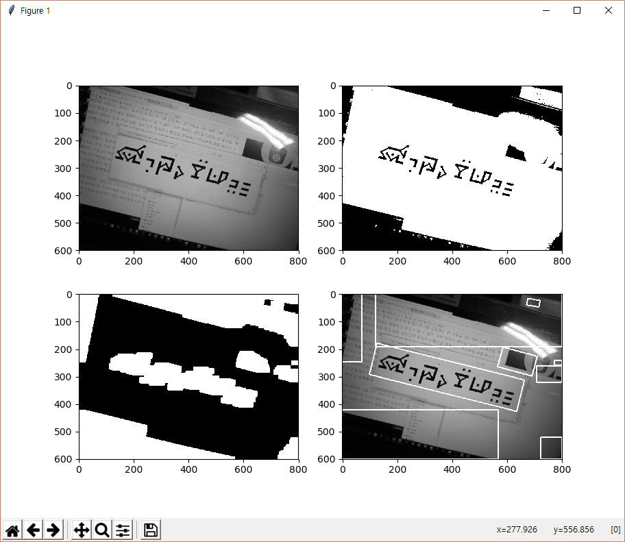
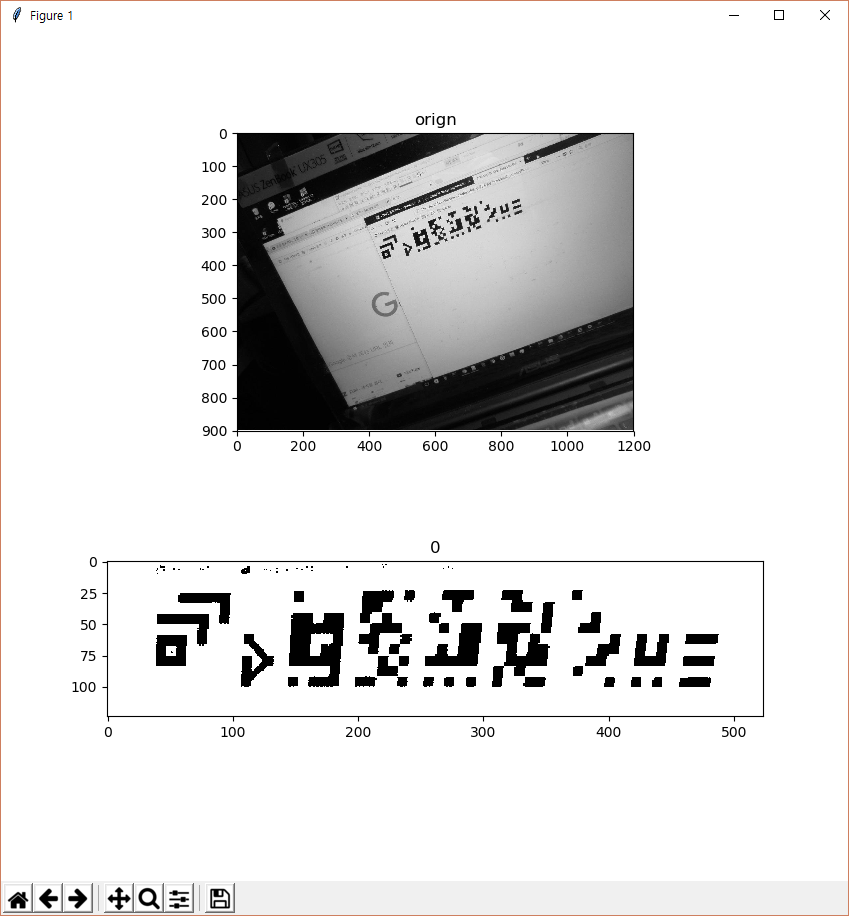

빈글과 자동인식¶
최근 인공지능을 사용한 사물인식 기술이 크게 향상되면서 OpenCV 같이 실시간으로 이미지나 영상을 처리하여 시각적 정보를 자동적으로 인식하는 기술이 주목받고 있다. 공간과 사물을 인식하고 추적하며 문자나 마커, 표지판, 바코드와 같은 것을 알아차릴 수 있을 정도로 발전되었고 다양한 분야에서 사람의 일을 대체 하고 있다. 머지않아 인공지능과 컴퓨터는 인간과 유사한 시각적 인지기능을 갖추게 될 것이다.
빈글문자는 원래 OCR(광학문자인식)을 사용하여 기계적 처리가 쉽게 가능하도록 계획된 문자였다. 필기체는 없고 문자의 두께와 비율이 일정하게 유지된다. 형태적 다양성을 위해서 문자폭이 가변적이지만 흑백의 반복되는 패턴이 일정하고 규칙적이여서 사진이나 영상속의 빈글문자를 쉽게 추출할 수 있다.
{kind=link}
보통 문자의 자동인식에 있어서 문자 수가 적은 알파벳의 경우 인식율이 높고 한글이나 한자와 같이 문자 수가 크면 인식율이 떨어진다. 그러나 최근에는 머신러닝이 도입되어 인식율은 빠르게 개선되고 있고 특정한 분야에서 사람과 대등한 인식능력을 보여주고 있다.
빈글은 문자인식에 있어서 다른 언어의 문자들과 비교한다면 매우 간편한 편이다. 빈글은 규칙적이고 정형화된 형태를 지니기 때문에 자동인식 프로그램에서 일반적인 문자유형 처럼 처리하는 대신 특정한 패턴들이 반복되는 바코드처럼 처리할 수 있다. 따라서 빈글문자는 머신러닝을 사용하지 않고도 쉽게 자동인식 프로그램을 제작할 수 있다. 더우기 머신러닝을 적용한다면 인식기능을 더욱 향상시킬 수 있을 것이다.
OpenCV를 사용한 빈글문자인식¶
{kind=link}
위 이미지들은 OpenCV를 사용하여 원본이미지에서 빈글문자가 있는 영역을 추출해내는 과정이다.
- 원본이미지를 적정한 비율로 흑백이미지로 만든다.
- 문자획의 픽셀들을 확장시켜서 이어진 하나의 덩어리가 되도록 한다.
- 다음엔 이미지에서 덩어리들을 감싸는 사각형들을 구한다.
- 그 사각형 중엔 빈글문자가 아닌것들도 포함되어있다.
- 빈글문자는 일정한 분포를 가지고 있어 흑백 픽셀의 확장과 수축시에 흑백의 비율이 크게 차이가 있는 사각형영역을 빈글문자로 판단한다.
{kind=link}
빈글문자로 인식된 비스듬한 사각영역을 바로 세운다. 이제 빈글문자의 획들에서 직접 코드값을 구할수 있다.
{kind=link}